Here's an example that shows what I did to do medium scale abstraction. One problem is that the betPost file was incredibly long and complex. This meant the did more than it should and if I wanted to add a simple button that would toggle between the normal big bet, and a smaller bet, I would have to add a lot of code and it would look very nasty. Instead, I abstracted away the betPost file into what is effectively a betPost container and a smallerbetPost and a FullBetPost class. This was a very clean abstraction that led the posibility to very easily include and add any new betPost containers. It was simply called the BetPostContainer in the App, and wether it was compact or not. Depending on the compactness, it showed the corresponding betPost. This abstraction is super important to add usabilty to the code so future progress is easier to make. This acheives abstraction because everything is able to use the BetPostContainer class. This allows whatever information is necessary and makes it easy to use it to show what bet should be seen. Sadly, I did this abstraction very late into our development cycle and merging it would effect a lot of code as I completely deleted the original, betPost file. Realistically, it should not be an incredible amount of extra work. But accessibility was already done for the original betPost, so it would have to be redone here, and we as a group decided that was too much effort to include for something that doesn't change the website at all.
This competency deals with creating multi component systems, and I feel we did that very well. React is all about building components, and we did that very well. We split up the code into button, betpost, login, and other components. For example, given our betPost code, we displayed client-server principles. This is shown in the entirety of the betPost code and is located under src. I did a lot of work in creating the betPost. We also have event-driven architecture. When a user logins a pop-up is created to log them in. This changes the state of the program. The event driven architecture was responsible for creating login and create bet which change the state of the program based on user events. We had to use react-hooks for this stuff, as that was necessary for collecting and storing the data which the user inputed.
I wrote tests for a decent amount of the front end. For example, I wrote tests for login, registration, and app. Mina also helped to write tests for app. For registration, 93% of the code is covered. The most important part is showing the display. So I tested if it renders correctly. The close button, form submission with empty fields, and password being to short are also tested. I also tested for error messages on failed registration. We used vitest for this. One part that is not covered is text color and fontsize props. Those props could honestly be deleted because we did not end up using them in the registration code, but they could be useful in the future if we wanted that to change. Also, in app.tsx. we didn't do exhaustive testing for the minigames in app because that was more of a fun feature that we're would take a lot of time to fully test.
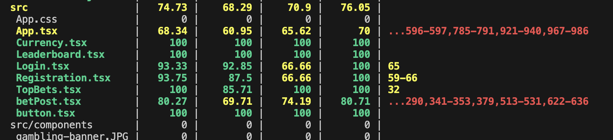
All we have to do to run tests is type npx vitest. This tests our entire code and runs every single test. If there is an error or a failed test, that is tested simply with the npx vitest. I also added a github workflow to automatically check and run the tests whenever we merge. And this should help reject the code if it fails the tests. This workflow is pasted below. I also updated json config to use these tests. When we were testing backend, we discovered a major bug. People could create new bets even if they didn't have an account. This saved us time from having to look for a big bug to fix and allowed our back end to fix that while we were all together. Testing has also done well for making sure every version of the code is correct. Tests were very useful for making sure no one is submitting any big merge that will cause thousands of bugs. We didn't do that for one merge which created a big problem for the team. This was also helpful as before I merged on my changes, I went through the tests we as a group started to write, and I realized my github was not properly synced up. This could have been much worse and the test helped me find the problem before I made a pull request.
name: CI
on:
push:
branches: [main]
pull_request:
branches: [main]
jobs:
test:
runs-on: ubuntu-latest
steps:
- uses: actions/checkout@v4
- uses: actions/setup-node@v4
with:
node-version: 20
cache: 'npm'
- run: npm ci
- run: npm test
- run: npm run build
In order to find users' needs we used a variety of techniques. First, we created personas. We also used interviews and observations. I was responsible for my interview with Ben. This helped give us the idea to not actually use money and try to make the app similar to yik yak because These were both things that interested Ben. This also helped encourage us to make the minigames because he talked about how he likes blackjack.
For ideation, we started off by creating personas on users we wanted to target. During this, we identified a a couple general needs/ categories that users might fall under. These categories are people who: are addicted, use the app for self-expression, like lurking, and play to win. For each of these categories, we tried to design the app to appeal to them.
For the addict, referred to as Ethan, we wanted to make the app as easy to use as possible. This means the bets are super visible and easy to access, and it is super easy to create bets.
For the self-expression user, caleld Harris, we wanted the ability to use the app as a form of self expression. We allow this by permitting users to create a bet on whatever they wanted. The user is further supported by the upvote button which gives them the ego boost for when their creative bets do well. Additionally, we have added comments so the user can show their creativity by commenting on other posts.
For the social lurker, called Joseph, we wanted to design the app to be a social experience. We wanted the app to have a similar style to yik yak which a lot of people scroll on with friends and is a very social app. For Joseph, he is not going to bet on the app much and purely wants it to look at interesting bets. We will target this user by including sorting categories for the bets. This way he will be able to see what bets he wants to, when he wants them.
For the winner, called Lucy, we wanted to make the app as easy to game as possible. That is, if someone really wanted to win, they could dedicate time to perfecting their bets to win as often and as much as possible. We include the leaderboard in this website so that Lucy can see herself at the top of the leaderboard. Additionally, we will include a history of bets, so that Lucy can see which bets have done the best.
All of these users demonstrate how we started ideation and how we started the development of our app. Additonally, we all had an equal hand in creating these personas as we all sat in a room and created them. These personas led us to the decision to make a leaderboard and to try to make the app as social as possible.
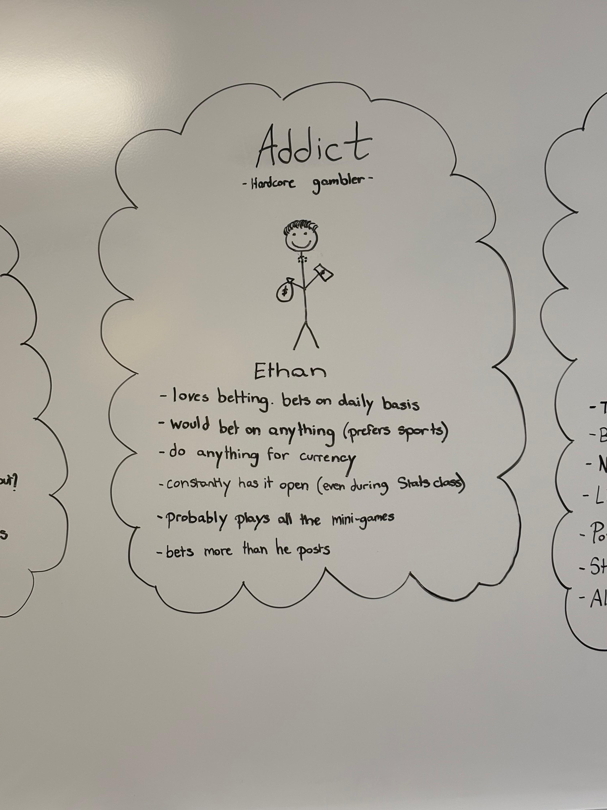
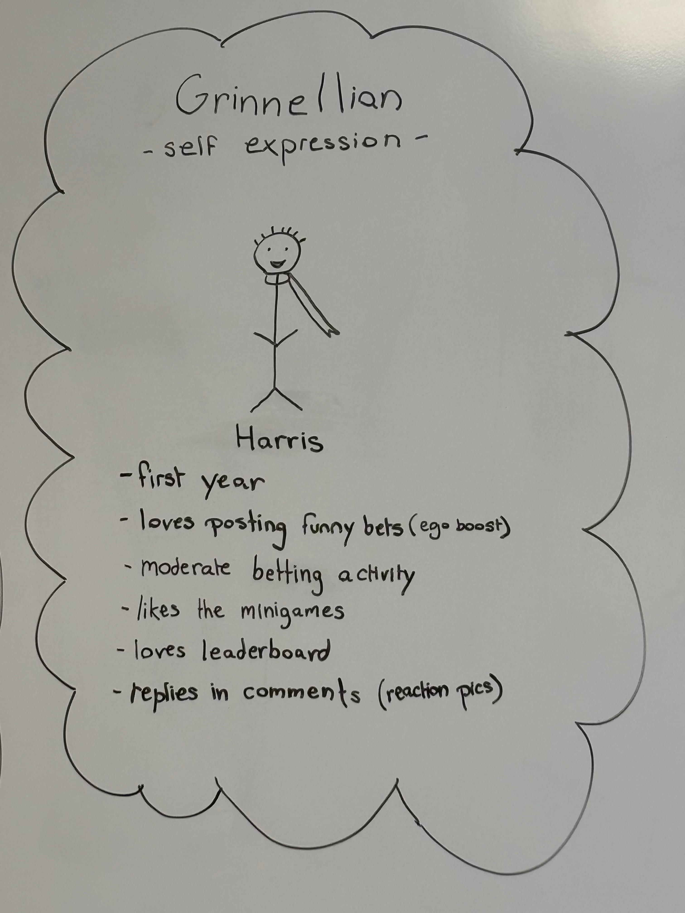
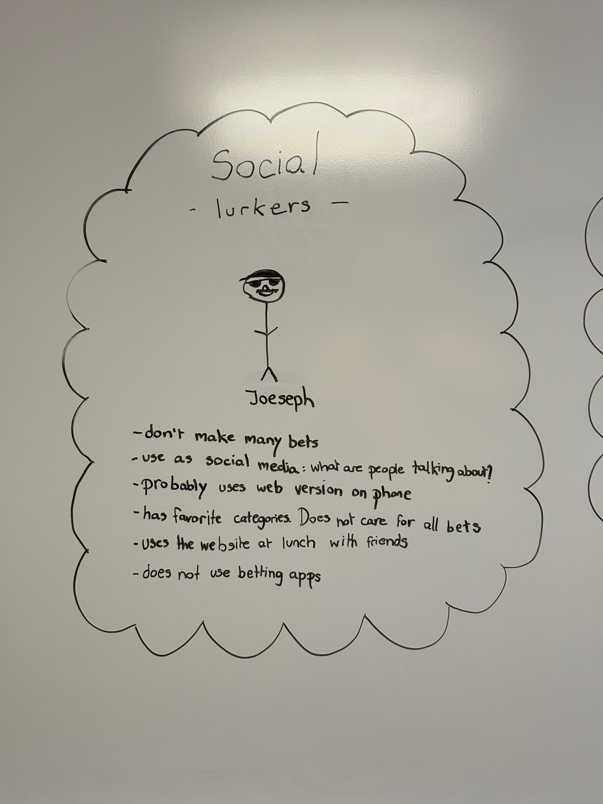
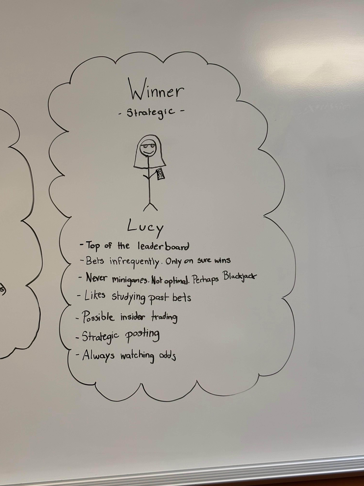
We started by creating a prototype that will show how our website will function. This prototype was meant to address how users would interact with the app because before this prototype, we did not have much vision on what the app should exactly look like. While creating this prototype we discovered a couple issues that were not addressed in our original needfinding. Our main question to answer, was how does this app work and how will other people use it. We wanted to make information accessible and easy to use. We designed the prototype so that the bets were incredibly easy to see and interact with. Additionally, a leaderboard and easy way to create bets was needed. We included this all in the prototype and this really made it easier to visually conceptualize how we wanted the app to look. In the end, our app ended up looking relatively similar to the prototype, which shows that our prototype was effective in guiding us to answer our questions. I played a large part in the creation of the prototype.
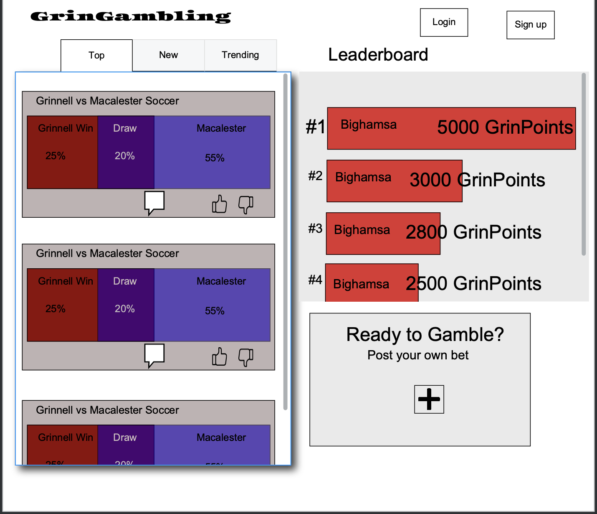
In order to evaluate this app, I gave the website to a roommate and told them to try it out. They were already a CS major and had the general idea of the app, so it wasn't a truly blind study, but its results were helpfil. The design of the study was to see if there were any major errors or flaws in our product. The user identified a couple. First, the report button does not actually do anything. That the creators of the bet don't have a way to choose who won, and that there is no way to delete bets. All of these critiques are incredibly valid and show that our product still has a little bit more work to be done if it wants to see commercial deployment. This user study updated our todo list. The user also talked about how a night mode would be useful. In effect, we still have features that should be added.
My group and I agreed it was alright to use generative ai tools such as chatgpt to help us develop code. Besides that, the tools we used were, React for all of the front end. Vitest in order to test the code. Github for communicating and organizing the code between us. All of this was incredibly useful to help us develop and write code. React allowed us to use premade components and hooks. Vitest was incredibly useful for developing the code, github was necessary for keeping everyone on the same branch, and generative ai was very useful for generating the busy work, such as some of the basic tests, and it was super useful for getting started using react. One of the biggest issues our group had, was communicating through github. There were a bunch of times, when we were all working together when we had merge conflcits and terrible cluttering of the code. One example was Youssef uplaoded to github and we merged, but somehow not everything was uploaded when fetched origin. Then when I made a pull request and it was accepted, the version was broken on everyone elses computers. A lot of the work Youssef and Mina put into the code was reverted. This was incredibly confusing, but we learned how to revert changes on github and track down version history to go to the best version. Github was incredibly useful here, in a way, it was both the cause and solution to our problem. In the future, if we had test cases those would have been incredibly useful for catching errors with our merge. This is because after I merged my branch with Github, we continued developement without noticing that the current version did not have all of Youssef's changes. This is what made this Github merge so confusing. We were in the end able to find the best branch to revert to, but there were a lot of branches and changes.
One of the main technologies our tutorial talked about was react. I was in charge of making two slides on react. There I talked about it being faster, using the VDOM, and how react is a component based langauge. I also talked about some of the cons and pitfalls of using react. React was incredibly vital to the front end as it provided everything necessary to do front end work. The entire front end was in react and typescript. typescript was just the language though, so react was responsible for everything front end related. React's main strength is its component based architecture. React is also very good at creating reactive websites that respond to users actions. This was incredibly necessary for our betting logic. I have not designed front-end for other proejects so I can't really compare react to other tools to well. One weakness though, is that react does not include backend as well. It was incredibly difficult to sync up the front and backend, and react does not help at all for this. I would also say react is not the most intuitive, so there was a very steep learning curve to doing everything. React felt similar to using a mix of html and javascript, so I can compare react to my past experiences with javascript. In this case, I felt react was practically the same, but some of the syntax was better and it felt cleaner to use. I really liked the component based architecture. The two main problems of react, are what I said before. It is not a full environment which implements the backend, and it has a steep learning curve. This means that if my team was going to adopt it, I would like them to commit early on to figuring out how to connect back and front end, and also to learning react. This means watching tutorials and perhaps doing simple test projects. This would ensure that everyone has equal footing and is able to contribute equally.
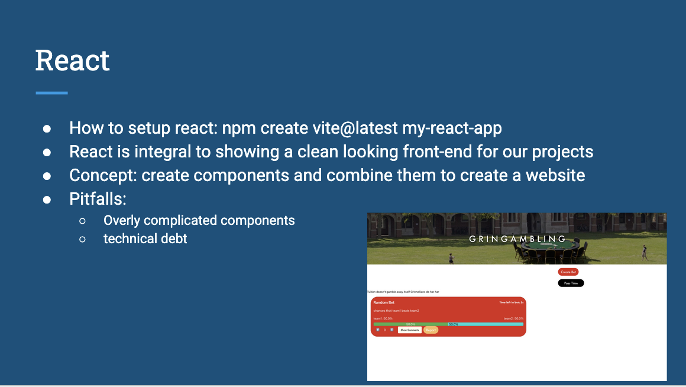
Our main way of organizing work was threefold. First we used Whatsapp in order to text people and communicate. We used the Github issues tracker to asign tasks. Finally, we used dedicated group meeting timeslots to check in and figure out how much worked we wanted to get done. Our group was very effective at following through and using these processes. What was most useful was our meetings twice a week. We also were able to talk in class and figure out our goals for the week. We did very well at communicating at our expections were more or less always met by everyone in the group. When we wanted to work, we did. We also used github in general as a way of organizing our code. Overall, our group did very well at using what it needed to. Some of us did not know how to use github as well, but we got much better by the end of the semester. We used whatsapp incredibly well for communicating and setting expectations. We also were very good at dividing up the work. Whenever we met, we figured out what needed to be done and got people to do that. Our group dynamic was probably the biggest things that got in the way of integrating these processes into our workflow. We honestly became too good of friends and ended up gossiping our playing games when meeting together. This was not the fault of any individual, but the group as a whole. This meant that when we met, sometimes we only met to talk about our day or set expectations for our next meeting. While this meant we may not have always been super efficient, we had a really good dynamic and knew what everyone expected of each other.
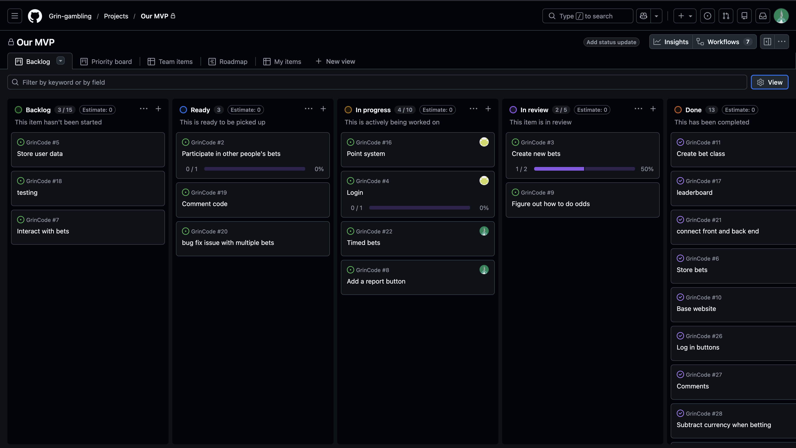
As a team, in a lot of meetings, we issued tasks and whatnot on the Github issue tracker. This can be seen in the rightmost image. Additionally, we ended up having a lot of bugs which were talked about. One is I wrote some tests using playwright, but we didn't want both tests, playwright and vitest to run at the same time. So I had to update the code to make only vitest tests run when we wanted them too and not playwright. I also reviewed some code, such as Mina's when she did a pull request. Another thing that happened, is when I merged and created a bunch of conflcits, we had a whole effort dedicated to reverting the changes on github. This was a group effort where we figured out the problem and fixed it by reverting github and then and then figuring out what to add back that was lost. I had to communicate with my peers in each of these instances, with the bug, our playwright weren't working with vitest so I figured out the best way of separating them so we could do both instances individually. Another bug we found was the ability to upvote multiple times. We could also upvote without being logged in. This was not shown in github, but happened in our meeting. This did come into effect when Mina revert the pull request as my pull request 34 broke that feature when we added it back in. So we had to revert things so it worked again. Also, for my abstraction, I made a significant change to the betPost class so that it was abstract and able to easily contain show differnt sized postcards. In order to do this, I effectively split the betPost card class into many differnt files each of which with a very specific functionality. This changed up a lot of the code though and was very last minute, so the pull request was denied. We were able to properly communicate about the reasons why, and it makes a lot of sense. The pull does not change the visual presentation whatsoever. It simply makes the code more abstract, and in doing so breaks what other people were working on in the betPost class. All of the difficulties we encountered were usually resolved through in person meetings. We talked a lot about what we were going to change and then did that. The big issues we had, were the couple of times when there was a big merge conflict. This was usually resolved by reverting to the original version, making sure everyone was up to date, and then having one person dedicate their version to figuring out the conflicts. Overall, this was very effective at fixing any problems.
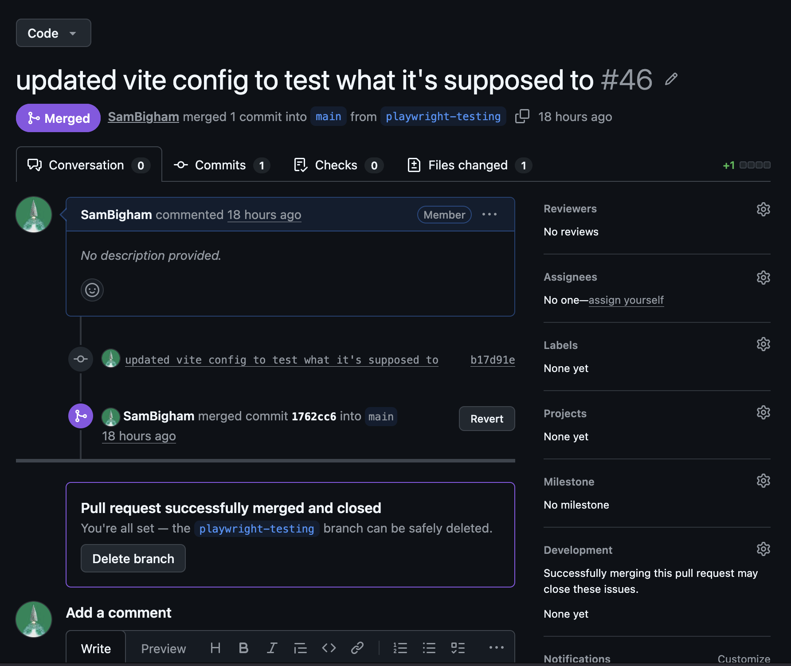
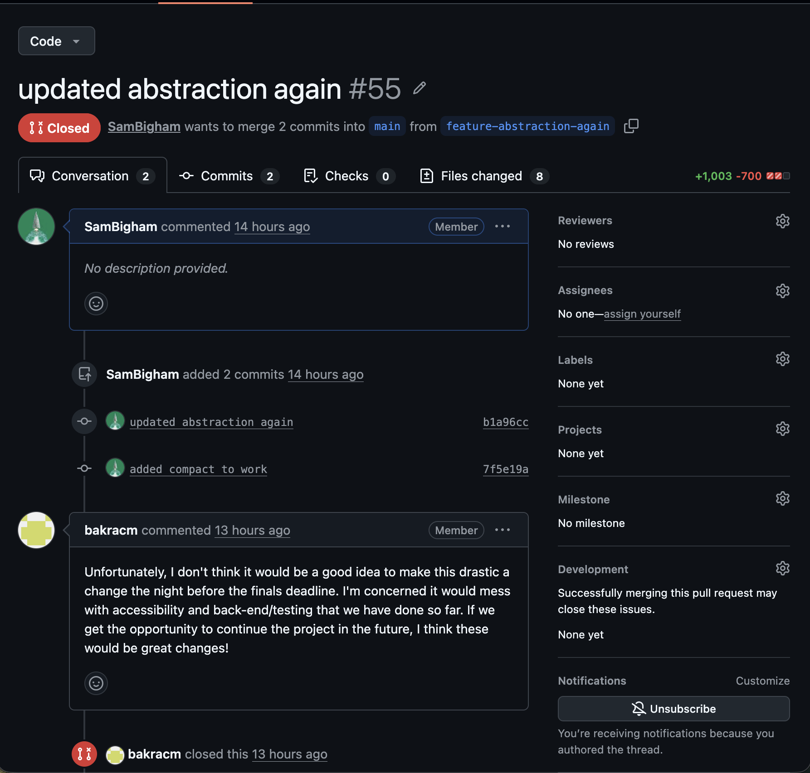
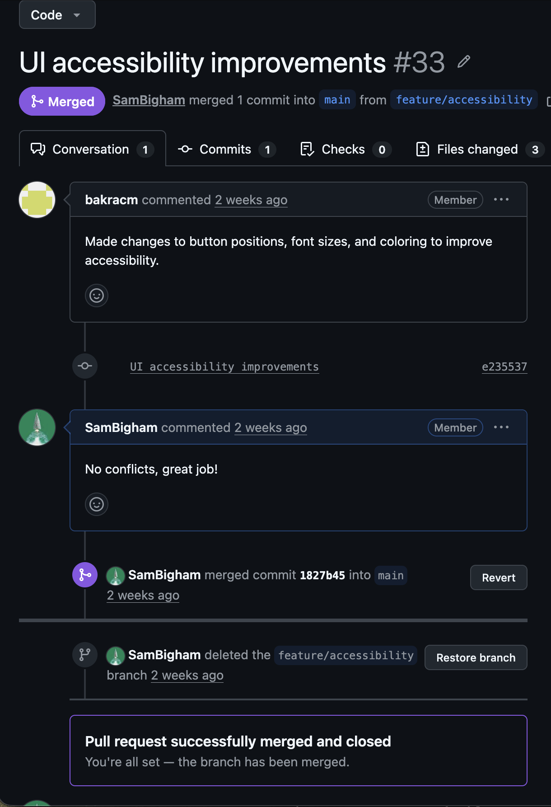
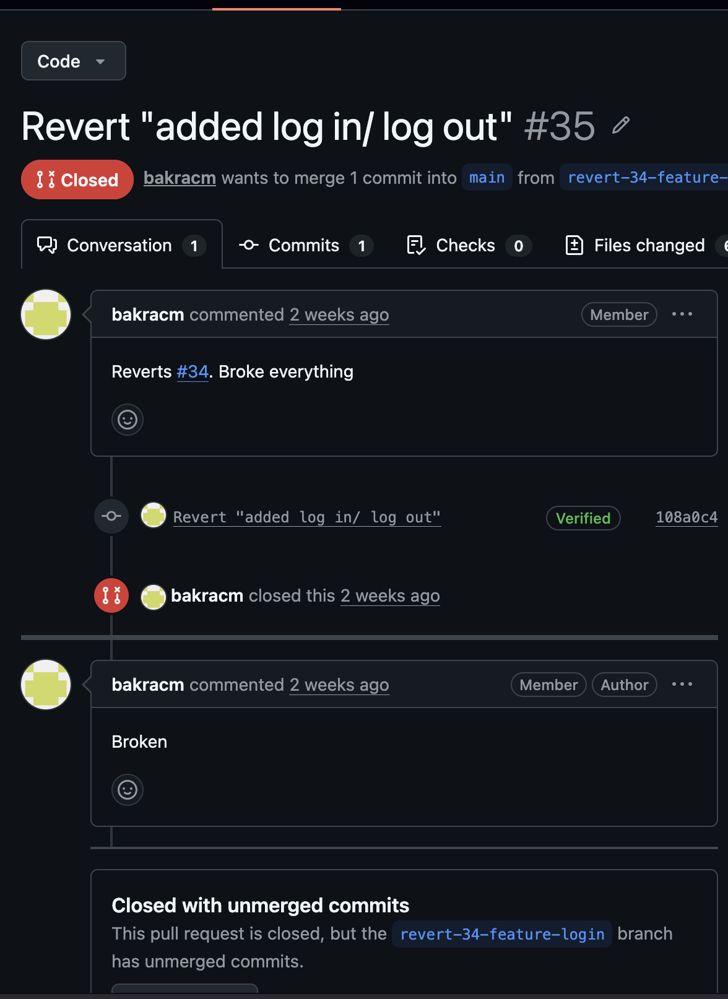
I helped Youssef with the security advanced competencies. Front-end did not have to deal with security as much, so it was interesting trying to understand and help work on the back-end. Overall, I helped Youssef with talking about sql injection, and putting preventions to typing incredibly long passwords which crash the database. Sql injections were interesting and I helped fix the concatenations which can cause sql injections. For the surface area of the system, potential areas of user interaction are: upvoting, betting, commenting, creating a bet, login, logout, registration, report, and the minigames. In terms of possible threats, some examples would be. A bad actor, a hacker trying to use sequal injection to get a list of all our users. They want to get this information to sell it. Another example could be a bad actor, a rival company trying to crash our website by sending too many requests. Another would be a rival company trying to make a password too long so it overloads our database. Another threat could be if a user took someones password, they could stay on the account forever as long as they don't log out. If a user would comment an arbitrary amount to close someone else's bet, that could also be a problem. If a user keeps making new accounts so they can bet on their own post to get it to the top, that would also be a problem. For each of these threats we do have potential solutions. For sql injections, we don't have any of the concatenations or stuff that allow users to use sql injections. We also created a limit for the password length to prevent arbitrary length passwords. Other potential fixes would be timed logouts, so each user is logged out after 30 days. Limiting comments to prevent spamming, and tying accounts to grinnell email usernames so each person only gets one.